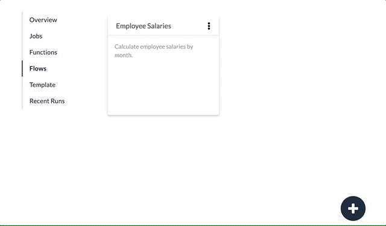
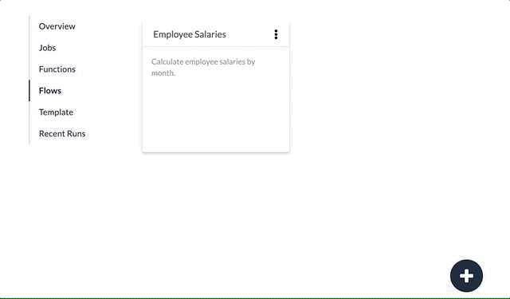

Create a Flow
To create a new Flow, click the + icon in the lower right corner. You will be prompted for a name. Once created, you can begin adding Stages.
See also: About Flows, Configure a Flow, About Flow Stages
To create a new Flow, click the + icon in the lower right corner. You will be prompted for a name. Once created, you can begin adding Stages.
See also: About Flows, Configure a Flow, About Flow Stages